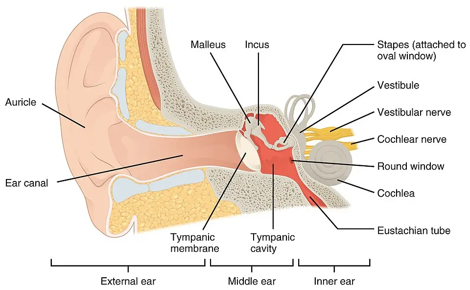

DX.5 — Dermatite eczémateuse du conduit auditif
L'eczéma du conduit démange, récidive et se cache souvent derrière une otite qui ne guérit pas ; l'erreur classique consiste à multiplier des gouttes qui en sont la causeS6S7. Le diagnostic reste clinique, et l'éviction de l'allergène guérit l'eczéma de contactS5.
1. Définition
La dermatite eczémateuse du conduit auditif est une inflammation non infectieuse de la peau du conduit, qui appartient aux formes atopique, de contact ou séborrhéique de l'eczémaS1. ENT (Ear, Nose and Throat) UK (Royaume-Uni) la range parmi les otites externes chroniques lorsqu'elle persiste 3 mois ou plus, du fait d'une allergie ou d'une dermatose chroniqueS4.
2. Épidémiologie (Suisse, puis Europe)
Aucune série suisse ne mesure la fréquence de l'eczéma du conduit ; la revue suisse de dermatologie rappelle que les eczémas comptent parmi les maladies cutanées les plus fréquentesS1. Les eczémas du visage, du pavillon et du conduit figurent parmi les formes d'eczéma de contact les plus fréquentes chez les patients d'ORL (oto-rhino-laryngologie)S5. Les chiffres d’une série européenne, les terrains exposés et l'évolution précisent ce constat. Le parcours de soins explique pourquoi le diagnostic tarde.
Ce que montre une consultation spécialisée d’otite externe
Une clinique de recherche de Newcastle a analysé 62 patients adressés pour otite externe ; elle donne une idée de la place des dermatoses parmi les otites rebellesS7.
| Donnée | Valeur | Population et année | Source |
|---|---|---|---|
| Femmes | 63 % | 62 patients adressés, Newcastle, 2022 | S7 |
| Âge médian | 57 ans | Même série | S7 |
| Dermatite | 21 % | Même série | S7 |
| Allergie de contact | 13 % | Même série | S7 |
| Allergie systémique | 30 % | Même série | S7 |
| Antibiotiques oraux reçus avant l’avis | 60 % | Même série | S7 |
Ces chiffres viennent d'un centre tertiaire et ne mesurent pas la fréquence en population ; ils montrent surtout qu'une otite qui résiste cache souvent une dermatoseS7S4.
Parcours avant l’avis spécialisé
Dans la série de Newcastle, les patients avaient consulté en moyenne 4 fois leur médecin généraliste et 2 fois l'infirmière du cabinet avant l'avis ORLS7. Parmi eux, 18 % n'avaient jamais reçu de gouttes et 39 % n'avaient pas reçu le conseil de garder l'oreille sècheS7. Moins de 10 % avaient un conduit étroit, 36 % avaient un écoulement actif, et moins de 7 % ont eu besoin d'une mècheS7.
Les auteurs estiment qu'environ 75 % de ces patients pourraient être soignés dans une consultation de soins auriculaires de proximitéS7. Le message pratique est simple : le traitement local, les conseils et l'examen du conduit priment sur l'antibiotique oralS7S4.
Qui fait un eczéma du conduit ?
Le terrain atopique expose l'enfant d'âge scolaire aux poussées sur les zones découvertes, dont l'oreille, souvent provoquées par les aéroallergènes comme les acariens ou les poils d'animauxS1. Le porteur d'appareil auditif, d'écouteurs ou de protections auditives est exposé aux plastiques, aux caoutchoucs et aux acrylates de ces objetsS1S6. Le patient qui a reçu de nombreuses gouttes auriculaires risque une sensibilisation, dont les aminosides sont les premiers responsablesS6. La dermatite séborrhéique touche volontiers les régions pré- et rétro-auriculaires, en lien avec les levures lipophiles du genre MalasseziaS1.
Histoire naturelle
L'eczéma de contact guérit lorsque le patient évite la substance déclenchante, alors que l'eczéma atopique, déterminé génétiquement, suit un cours chronique et récidivantS5. Le grattage entretient les poussées et provoque des excoriations qui se surinfectent, ce qui transforme l'eczéma en otite externe aiguëS1S4. Les dermatoses inflammatoires du conduit figurent d'ailleurs parmi les facteurs favorisants de l'otite externe aiguëS4.
3. Physiopathologie
La peau du conduit capte tout ce qui y entre, si bien que la base à connaître explique la topographie des lésions et le choix des gouttes. Dans l'eczéma de contact allergique, l'haptène traverse la couche cornée, se lie à une protéine porteuse et devient un antigène complet, reconnu par les lymphocytes TS5S1. Le prurit qui en résulte déclenche le grattage, lequel rompt la barrière, favorise la surinfection et entretient l'inflammationS1.
La chaîne physiopathologique décrit les étapes communes aux trois formes, et le tableau de corrélation relie chaque perturbation à son exploration et à son traitement. L'index thérapeutique des corticoïdes explique enfin le choix de la molécule.
Base à connaître : la peau du conduit auditif
Le conduit est tapissé d'une peau munie de poils et de glandes qui produisent le cérumen ; l'eczéma ou la dermatite peut la toucher et provoquer des démangeaisons importantesS2. Cette peau entre en contact direct avec les embouts, les écouteurs et les gouttes, ce qui explique la fréquence des allergies de contact à cet endroitS6S1. Le schéma ci-dessous montre ces zones de contact et le tympan, dont l'état conditionne le choix des gouttes.
Peau du conduit et zones de contact. Ce schéma publié en couleur coupe l’oreille droite et sépare l’oreille externe, l’oreille moyenne et l’oreille interne.

Lisez d'abord seul ce cliché (peau du conduit et zones de contact) : cherchez vous-même le signe.
La copie annotée (peau du conduit et zones de contact) numérote les repères décrits ci-dessous.
- 1. La conque et l’entrée du conduit reçoivent écouteurs, embouts d’appareil auditif et cosmétiques, qui sont autant d’allergènes de contact.S1S6
- 2. Le cartilage du segment externe porte une peau mobile, que le grattage et les cotons-tiges excorient facilement.S1
- 3. La peau du conduit, mince et enfermée dans un canal étroit, retient squames et suintement lorsque l’eczéma la desquame.S1S2
- 4. Le tympan intact autorise les gouttes combinées ; perforé, il contre-indique Panotile en raison de l’ototoxicité.S9
- Le schéma montre une peau saine et lisse ; il ne montre ni la lichénification ni les squames de l’eczéma chronique.
- La coupe ne figure pas l’appareil auditif, alors que son embout touche directement la zone dessinée en premier.
Ce que l'image décide. Le schéma justifie de nettoyer le conduit, de vérifier le tympan puis de chercher l’objet ou le produit en contact avec cette peau.

Du contact à l’otite chronique
- Amorce. Un allergène de contact, un terrain atopique ou des levures de type Malassezia déclenchent l'inflammation de la peau du conduitS1.
- Sensibilisation. Dans l'allergie de contact, l'haptène lié à une protéine active les lymphocytes T ; la réaction apparaît au site d'exposition, à bords flous, avec des éléments à distanceS1S5.
- Installation. La peau rougit, suinte en phase aiguë, puis s'épaissit et se lichénifie en phase chroniqueS1S4.
- Maintien. Le prurit provoque le grattage, les excoriations s'impétiginisent, et les gouttes répétées ajoutent de nouvelles sensibilisationsS1S6.
- Conséquence. L'otite devient chronique et résiste aux traitements antibactériens, tant que la cause cutanée n'est pas reconnueS4S6.
Index thérapeutique des corticoïdes locaux
L'index thérapeutique rapporte les effets recherchés, mesurés objectivement, aux effets indésirables ; un index élevé signifie une bonne efficacité pour peu d'atrophie cutanéeS1. Parmi les corticoïdes de classe II, l'hydrocortisone butyrate, l'acéponate de méthylprednisolone et le prednicarbate atteignent l'index le plus favorable, à 2,0S1. Parmi les corticoïdes puissants de classe III, le furoate de mométasone obtient le meilleur indexS1.
Fölster-Holst et ses collègues recommandent de choisir une préparation récente de classe II ou III selon l'âge, la localisation et la sévérité, puis de la diminuer progressivementS5.
Corrélation : perturbation → exploration → traitement
Chaque perturbation se relie à l'examen qui la démontre et au geste qui la corrigeS1S4S5.
| Perturbation | Exploration qui la montre | Traitement qui la corrige |
|---|---|---|
| Hypersensibilité retardée à un haptène | Tests épicutanés selon les recommandations | Éviction stricte de l’allergèneS5S1 |
| Inflammation cutanée | Otoscopie : érythème, squames, lichénification | Corticoïde local de courte duréeS4S5 |
| Barrière cutanée rompue | Excoriations visibles | Émollients et soins douxS4S5 |
| Surinfection à Staphylococcus aureus | Prélèvement du conduit | Antiseptique, antibiotique local bref ou systémique si sévèreS1 |
| Prolifération de Malassezia | Topographie séborrhéique | Antifongique associé à un anti-inflammatoireS1S4 |
4. Démarche diagnostique
La démarche écarte d'abord ce qui menace : l'eczéma herpétique, l’érysipèle et l’otite externe nécrosante, puis la tumeur du conduit lorsque les symptômes persistentS1S2S4. Elle distingue ensuite l'eczéma des diagnostics fréquents, en particulier l'otomycose, le psoriasis, la teigne et l'otite externe bactérienneS1S4. Le tableau discriminant donne l'élément qui tranche, le piège et la conduite. D'autres dermatoses de l’oreille se discutent devant une présentation inhabituelle.
Un enfant atopique dont l'eczéma de l'oreille se couvre brutalement de vésicules et d'érosions doit recevoir sans délai un antiviral, car l'eczéma herpétique peut s'étendre à tout le corpsS1.
Ce qui ne doit pas être manqué
Eczéma herpétique. Il complique l'eczéma atopique, surtout au visage, à partir d'un herpès de l'enfant ou d'un herpès labial de l'entourageS1. Le traitement associe un antiviral oral, ou intraveineux dans les formes disséminées, à des mesures asséchantes localesS1.
Érysipèle. Le pavillon devient rouge et chaud, avec une forte fièvre, des frissons et une altération de l'état général ; une antibiothérapie systémique s'imposeS1.
Otite externe nécrosante. Une otalgie nocturne sévère avec granulation chez un diabétique âgé impose le transfert ORL ; le cours DX.9 la traite en détailS4.
Tumeur du conduit. La persistance d'une douleur, d'un prurit ou d'un écoulement impose un contrôle pour écarter une néoplasie du conduitS2S3.
Autres dermatoses à connaître
Rosacée. Ses formes papulopustuleuses peuvent toucher l'oreille, et une rosacée induite par les corticoïdes locaux doit être recherchéeS1.
Réaction phototoxique. Elle survient sur les zones exposées après un médicament comme la doxycycline ; le traitement associe l'arrêt du déclencheur et un corticoïde localS1.
Lucite polymorphe. Elle provoque des papules très prurigineuses quelques heures à quelques jours après une forte exposition solaire, souvent au printempsS1.
Lupus érythémateux. Il apparaît 1 à 3 semaines après l'exposition solaire et régresse lentement, ce qui le distingue de la luciteS1.
Engelures. Elles forment des nodules bleu violacé qui brûlent au réchauffement ; elles se traitent par la protection contre le froidS1.
Ces dermatoses rappellent que l'oreille exposée reflète des maladies générales, ce qui justifie un avis dermatologique devant une lésion inhabituelleS1.
Diagnostics discriminants
| Diagnostic | Élément qui tranche | Piège | Conduite si positif |
|---|---|---|---|
| Otomycose (DX.4) | Feutrage fongique avec points noirs ou sécrétion blanche épaisse | Traiter par corticoïde seul une mycose, qui s’aggrave | Nettoyage et antifongique localS3 |
| Psoriasis du conduit | Plaques squameuses bien limitées, atteinte du cuir chevelu | Prendre un psoriasis pour un eczéma banal | Analogues de la vitamine D3 (cholécalciférol) ou corticoïdesS1 |
| Teigne de l’oreille | Plaques arrondies à bordure squameuse, mycose des mains ou animal familier | Une teigne traitée par corticoïdes devient peu inflammatoire et trompeuse | Antifongique local, terbinafine orale si étendueS1 |
| Otite externe aiguë bactérienne (DX.1) | Douleur au tragus, début rapide, écoulement purulent | Ignorer l’eczéma sous-jacent qui entretient les récidives | Gouttes antibiotiques et corticoïdes sur tympan intactS4S3 |
| Impétigo | Croûtes mélicériques, pustules | Négliger une gale impétiginisée chez le petit enfant | Antiseptiques, antibiotique oral si étenduS1 |
5. Anamnèse ciblée et drapeaux rouges
L'interrogatoire caractérise le prurit, l'écoulement et la douleur, puis il cherche le contact déclenchant, car l'éviction guérit l'eczéma de contactS1S5. Il recense les gouttes déjà reçues, car les patients adressés pour otite externe ont souvent consulté plusieurs fois et reçu des antibiotiques oraux inutilesS7. Les drapeaux rouges et l'erreur classique du débutant complètent l'anamnèse. L'âge du patient oriente d'emblée vers une forme.
Formes selon l’âge
Nourrisson. L'eczéma atopique forme des croûtes blanc jaunâtre sur fond rouge, surtout au cuir chevelu et aux joues, et ses lésions suintantes peuvent gagner l'oreille externeS1. Une surinfection à Staphylococcus aureus l'accompagne souvent, ce qui justifie un prélèvement en cas de croûtesS1.
Enfant d'âge scolaire. Les aéroallergènes déclenchent des poussées sur la tête, le cou et l'oreille, avec des plaques chroniques souvent lichénifiéesS1.
Adulte. L'allergie de contact domine, en particulier chez le porteur d'appareil auditif et chez le patient qui a reçu de nombreuses gouttesS6S7.
Prurit : symptôme cardinal
Le prurit du conduit domine l'eczéma chronique et devient souvent tourmentant ; il est typique lorsqu'il persiste des semaines, sans fièvre ni douleur viveS1S2. Il s'aggrave après un contact identifiable, comme un nouvel embout, un shampooing ou une laque, ce qui oriente vers l'allergie de contactS4S1. Un prurit associé à un feutrage fongique oriente au contraire vers l'otomycoseS3.
Écoulement : suintement ou pus ?
L'eczéma aigu suinte, si bien qu'un liquide clair accompagne l'érythème du conduit et parfois des traînées sur la peau voisineS1. Un écoulement purulent signale plutôt une surinfection, qui justifie un prélèvement et un traitement cibléS1. Un écoulement venant de l'oreille moyenne à travers une perforation relève d'une autre cause, détaillée dans la Phase AS4.
Douleur : atypique dans l’eczéma simple
L'eczéma du conduit provoque surtout un inconfort et un prurit ; une douleur vive au tragus traduit plutôt une otite externe aiguë surajoutéeS4. Une douleur intense chez un diabétique ou un immunodéprimé impose de rechercher une otite externe nécrosanteS4.
Questions de l’enquête allergologique
| Question | Raison |
|---|---|
| Portez-vous des bijoux, écouteurs ou un téléphone contre l’oreille ? | Le nickel de ces objets est un allergène fréquentS1 |
| Portez-vous un appareil auditif, une protection auditive ou des lunettes de sport ? | Les caoutchoucs, les embouts et les acrylates des montures sensibilisentS1S6 |
| Avez-vous mis des gouttes pour l’oreille contenant un antibiotique ? | La néomycine des gouttes auriculaires est un allergène classiqueS1S6 |
| Utilisez-vous une teinture capillaire, une laque ou un nouveau shampooing ? | La paraphénylènediamine, les laques et les shampooings déclenchent des eczémas de contactS1S4 |
| Utilisez-vous des cosmétiques parfumés ou conservés ? | Les parfums et la méthylisothiazolinone sont des allergènes reconnusS1 |
| Avez-vous un eczéma ailleurs, de l’asthme ou un rhume des foins ? | Ce terrain oriente vers un eczéma atopiqueS1S5 |
Drapeaux rouges : signification et action
| Drapeau rouge | Signification | Action immédiate |
|---|---|---|
| Vésicules et érosions brutales sur un eczéma | Eczéma herpétiqueS1 | Antiviral sans délai |
| Fièvre, frissons, pavillon rouge et chaud | ÉrysipèleS1 | Antibiotique systémique |
| Otalgie nocturne, granulation, diabète | Otite externe nécrosanteS4 | Avis ORL urgent |
| Symptômes persistants malgré un traitement bien conduit | Tumeur ou mycose méconnueS2S3 | Contrôle ORL |
Erreur classique : traiter l’allergie par l’allergène
Exemple. Une patiente de 60 ans, porteuse d'appareil auditif, reçoit successivement trois flacons de gouttes antibiotiques pour une otite qui démange depuis 4 moisS7S6.
Erreur. Chaque nouveau flacon contenant de la néomycine aggrave l'eczéma, car l'aminoside est le sensibilisant le plus fréquent des préparations auriculairesS6.
Raisonnement correct. L'otite chronique qui résiste fait suspecter une otite externe allergique ; l'examen montre une éruption de la conque et du conduit, et les tests épicutanés confirment l'allergèneS6S4.
Décision. Le médecin arrête les gouttes, prescrit un corticoïde local bref et choisit ensuite des préparations simples, sans sensibilisant courantS6S4.
6. Examen physique ciblé, région par région
L'examen commence par l'inspection du pavillon et des zones voisines, puis passe à l'otoscopie du conduitS1S4. Il vérifie ensuite le tympan après nettoyage et finit par l'examen cutané à distance, qui révèle souvent la causeS1S3.
Temps 1 — pavillon, conque et régions péri-auriculaires
Signe recherché. Une éruption maculopapuleuse de la conque et du conduit évoque une allergie à un produit local, comme la néomycineS4.
Geste. L'examinateur inspecte le pli rétro-auriculaire, la région pré-auriculaire et le bord de l'hélix, car chaque topographie oriente vers une causeS1.
Aspect. Des squames grasses pré- ou rétro-auriculaires orientent vers la dermatite séborrhéique ; un eczéma suintant au bord de l'hélix oriente vers une teinture capillaireS1.
Piège. Une fissure infectée du pli rétro-auriculaire représente une forme minime d'eczéma atopique, et non une simple plaieS1.
Temps 2 — otoscopie du conduit
Geste. On tire le pavillon vers le haut et l'arrière pour redresser le conduit, puis on introduit le spéculum sans frotter la peau irritéeS4.
Signe recherché. Le conduit apparaît épaissi et érythémateux, avec une desquamation accrue et des excoriations de grattageS4S1.
Forme chronique. L'hyperkératose et la lichénification de la peau du conduit signent l'ancienneté de l'eczémaS4.
Piège. Du tissu de granulation dans le conduit ne relève pas de l'eczéma ; il traduit une infection chronique et impose l'avis ORLS4.
Temps 3 — tympan après nettoyage
Geste. Le nettoyage du conduit sous microscope retire les squames et le suintement, ce qui rend le tympan visibleS3S2.
Signe recherché. Le tympan est en règle normal dans l'eczéma simple, et son intégrité conditionne l'emploi des gouttes combinéesS4S9.
Conséquence. Une perforation contre-indique Panotile et Ciproxin HC (hydrocortisone), si bien qu'un tympan non visible doit être vu par l'ORL avant toute instillationS9S12.
Temps 4 — peau à distance
Signe recherché. Un eczéma des plis, des mains ou du visage confirme le terrain atopique ; des lésions du cuir chevelu orientent vers un psoriasisS1.
Geste. On examine les mains et les ongles, car une mycose à Trichophyton rubrum peut contaminer l'oreille et doit être traitée en même tempsS1.
Ganglions. Une adénopathie régionale ou une cellulite du pavillon signalent une surinfection qui dépasse le conduitS4.
7. Approche syndromique
Trois syndromes s'emboîtent : l'eczéma prurigineux du conduit, la surinfection et l'otite chronique résistanteS1S4. Le tableau sépare les signes fonctionnels et physiques de chacun.
| Syndrome | Signes fonctionnels | Signes physiques |
|---|---|---|
| 7.1 Eczéma prurigineux | Prurit, gêne | Érythème, squames, lichénification |
| 7.2 Surinfection | Douleur, écoulement purulent | Croûtes, pustules, œdème |
| 7.3 Otite chronique résistante | Symptômes de plus de 3 mois | Conduit épaissi, éruption de la conque |
7.1 — Eczéma prurigineux du conduit
L'eczéma chronique du conduit associe un prurit intense à une desquamation accrue ; il représente une forme minime de l'eczéma atopiqueS1.
Suintement. Il se définit comme l'écoulement d'un liquide clair à travers une peau eczémateuse aiguë ; il se voit à l'otoscopie et traduit l'œdème de l'épidermeS1.
Lichénification. Elle se définit comme un épaississement de la peau aux plis accentués, qui résulte du grattage répété et se voit à l'otoscopieS4S1.
7.2 — Surinfection
Staphylococcus aureus surinfecte souvent l'eczéma atopique et entretient la réaction eczémateuse par ses exoprotéines et ses superantigènesS1.
Excoriation. Elle se définit comme une érosion linéaire due au grattage ; elle constitue la porte d'entrée des germes et se recherche sur le conduit et le pavillonS1.
Impétiginisation. Elle se définit par des croûtes et des pustules sur les excoriations ; elle se recherche à l'inspection et justifie un prélèvementS1.
8. Diagnostic positif et critères
Aucune société savante ne publie de critères chiffrés de l'eczéma du conduit ; le diagnostic associe l'histoire, la morphologie de l'eczéma et, pour l'allergie de contact, les tests épicutanésS5S1. Les éléments du diagnostic séparent ce qui suffit de ce qui ne suffit pas.
Ce qui suffit et ce qui ne suffit pas
| Élément | Valeur diagnostique |
|---|---|
| Prurit chronique, conduit érythémateux et squameux, sans feutrage fongique | Suffit pour retenir un eczéma du conduitS1S4 |
| Éruption de la conque après des gouttes | Fait suspecter une allergie au produit localS4 |
| Test épicutané positif et pertinent | Confirme l’allergène de contactS5S1 |
| Test positif sans lien avec l’exposition | Ne suffit pas, car la pertinence clinique doit être établieS5 |
| Squames blanches isolées | Ne suffit pas, car l’otomycose leur ressembleS3 |
La forme atopique se reconnaît à son terrain et à son évolution chronique et récidivante, alors que l'eczéma de contact guérit après l'évictionS5.
9. Examens complémentaires
Le diagnostic reste clinique ; le gold standard de l'allergie de contact est le test épicutané, réalisé selon les recommandations, en dermatologie ou en allergologieS5S1. En première intention, l'otoscopie après nettoyage suffit ; un prélèvement du conduit s'ajoute en cas de surinfectionS1S4. Les alternatives et la seconde intention concernent les formes rebelles.
Test épicutané (patch test)
Indication. ENT UK recommande d'envisager les tests épicutanés lorsqu'une dermatite de contact allergique est suspectéeS4. Sood et ses collègues recommandent ces tests chez tout patient suspect d'otite externe allergiqueS6.
Prescription. Le test applique une batterie standard d'allergènes, que l'on peut réduire à un spectre individualisé d'après l'anamnèseS5.
Interprétation. Un test positif ne compte que s'il correspond à une exposition réelle, comme l'illustre un eczéma subaigu positif à la chlorométhylisothiazolinoneS1S5.
Piège. L'aminoside n'est pas le seul coupable, car de nombreux composants des préparations locales sensibilisent ; le spectre testé suit donc les produits réellement utilisésS6S5.
Prélèvement bactérien et mycologique
Indication. Un prélèvement s'impose devant un écoulement purulent, des croûtes ou un échec du traitement, afin de cibler l'antibiotiqueS1S4.
Interprétation. Staphylococcus aureus et Pseudomonas aeruginosa dominent dans les surinfections bactériennes ; une levure comme Candida parapsilosis peut aussi être isoléeS1.
Conséquence. Une levure isolée sur un eczéma justifie une association brève d'un corticoïde local et de miconazole, comme dans le cas décrit par MayserS1.
Alternatives (9.c) et seconde intention (9.d)
| Situation | Examen | Raison |
|---|---|---|
| Grossesse | Otoscopie et prélèvement en cas de surinfection | Le diagnostic reste clinique, et l’éviction du produit suspect primeS5S1 |
| Enfant atopique | Examen cutané complet | Le terrain atopique explique l’atteinte de l’oreilleS1 |
| Lésion persistante ou atypique | Biopsie par l’ORL ou le dermatologue | Elle écarte une néoplasie du conduitS2S4 |
| Doute avec une mycose | Examen mycologique | Il distingue la teigne et l’otomycoseS1S3 |
| Psoriasis suspect | Examen du cuir chevelu et des ongles | L’atteinte du cuir chevelu accompagne souvent le psoriasis auriculaireS1 |
10. Arbre décisionnel
L'arbre décisionnel traite d'abord l'urgence, ensuite le tympan, puis la causeS1S4.
- Si l'eczéma se couvre de vésicules et d'érosions, alors un antiviral s'impose sans délai (conduite chronologique)S1.
- Si une fièvre, une granulation ou une otalgie nocturne existent, alors l'avis ORL ou le traitement systémique passe avant l'eczémaS1S4.
- Sinon, le conduit se nettoie et le tympan se contrôle, car son intégrité décide des gouttes autoriséesS3S9.
- Si des gouttes ont précédé l'aggravation, alors le médecin les arrête et prescrit un corticoïde local brefS4S6.
- Si une surinfection existe, alors il prélève et ajoute un antiseptique ou un antibiotique brefS1.
- Si l'otite persiste, alors des tests épicutanés recherchent l'allergène, et l'ORL réexamine le conduitS6S4.
Les critères pour adresser fixent le moment où le cabinet passe la main.
Quand adresser à l’ORL ou au dermatologue ?
| Situation | Destinataire | Raison |
|---|---|---|
| Otite externe suspecte de chronicité | ORL | ENT UK confie l’otite externe chronique à un centre spécialiséS4 |
| Symptômes persistants malgré un traitement bien conduit | ORL | Une dermatose, une mycose ou une tumeur doit être recherchée sous microscopeS4S3 |
| Allergie de contact suspectée | Dermatologue ou allergologue | Les tests épicutanés suivent des recommandations précisesS5S6 |
| Lésion inhabituelle du pavillon | Dermatologue | La palette des dermatoses de l’oreille est largeS1 |
| Conduit sténosé par l’œdème | ORL | Le nettoyage et la mèche se font sous microscopeS3 |
La majorité des otites externes adressées pourraient pourtant être soignées en proximité, à condition que le conduit soit examiné et nettoyéS7.
11. Prise en charge selon les recommandations suisses
11.A But. Le traitement vise un conduit sans prurit ni squames, puis l'absence de récidive grâce à l'éviction de la causeS5S4.
11.B Moyens. L'éviction de l'allergène constitue la mesure la plus importante, et elle s'applique aussi en préventionS5. Le médecin arrête les gouttes en cause, puis prescrit pour une courte période un corticoïde local, comme l'hydrocortisone butyrateS4S10.
Le choix du corticoïde suit son index thérapeutique : l'hydrocortisone butyrate, l'acéponate de méthylprednisolone et le prednicarbate ont le meilleur index parmi les corticoïdes de classe IIS1. Les soins cutanés doux et les émollients réduisent la consommation de corticoïdes et restaurent la barrière après la phase aiguëS5S4. Dans l'eczéma atopique, le pimécrolimus sert de traitement de deuxième ligne lorsque les corticoïdes ne peuvent pas être employésS11S1.
Les gouttes Panotile figurent dans l'AIPS (Arzneimittel-Informations-Publikations-System, base suisse des informations professionnelles) pour les dermatites eczémateuses, mais elles contiennent de la néomycine, premier sensibilisant des gouttes auriculairesS9S6. La divergence entre l'AIPS et la littérature européenne est donc tranchée au cas par cas. La surinfection bactérienne sur tympan intact peut recevoir ciprofloxacine et hydrocortisone, après prélèvementS12S1.
Situations spéciales. La grossesse, l’allaitement et l’enfant limitent surtout le pimécrolimus et les surfaces traitées. Le tableau des médicaments résume les doses issues des informations professionnelles suisses.
11.C Surveillance. Le contrôle vérifie la disparition du prurit et des squames, la tolérance du corticoïde et l'absence de surinfectionS4S10. Le pimécrolimus doit être arrêté si aucune amélioration n'apparaît après 6 semainesS11. Le traitement selon la forme et le niveau de preuve des gouttes précisent ces choix.
11.D Pronostic et critères de sortie. L'eczéma de contact guérit lorsque l'allergène est évité, alors que l'eczéma atopique récidive et demande des soins de fondS5. Les critères de sortie sont énumérés un par un.
Urgence — conduite chronologique (eczéma herpétique)
- Dès la consultation. Le médecin recherche des vésicules ou des érosions groupées sur un eczéma connu, surtout au visage d'un enfant atopiqueS1.
- Sans attendre. Il débute un antiviral oral ; une forme disséminée ou généralisée impose la voie intraveineuse, donc l'hospitalisationS1.
- En parallèle. Il applique des mesures locales asséchantes et un antiviral local, et il suspend le corticoïde sur la zone atteinteS1S10.
- À prévoir. La source, comme un herpès labial de la mère, se recherche, car elle explique la contamination et prévient la récidiveS1.
L'AIPS de Locoid contre-indique le corticoïde en cas d'herpès et d'autres infections virales de la peau, ce qui justifie cette suspensionS10.
Traitement selon la forme d’eczéma
| Forme | Conduite |
|---|---|
| Eczéma atopique | Corticoïde de classe II en traitement d’intervalle, soins de base et inhibiteur de la calcineurine ; réduction des aéroallergènesS1 |
| Eczéma atopique surinfecté | Antiseptique comme l’octénidine ou la chlorhexidine ; antibiotique systémique si l’atteinte est sévèreS1 |
| Eczéma de contact allergique | Traitement de l’eczéma et éviction stricte du déclencheur, confirmé par test épicutanéS1S5 |
| Dermatite séborrhéique | Association anti-inflammatoire et antifongique, en crème ou en lotion, par cures d’intervalleS1S4 |
| Eczéma avec levure isolée | Association brève d’un corticoïde local et de miconazoleS1 |
Les antibiotiques locaux ne s'emploient que brièvement, car ils favorisent les résistances et la sensibilisationS1. Le miconazole agit aussi sur Staphylococcus aureus, y compris les souches résistantes à la méticilline ou à l'acide fusidique, ce qui en fait une alternative aux antibiotiques locauxS1.
Lorsque l'œdème rétrécit le conduit, une mèche facilite l'application du produit, et le nettoyage se fait sous microscope chez l'ORLS3.
Que disent les essais sur les gouttes ?
La revue Cochrane de 2010 sur l'otite externe aiguë a exclu les formes eczémateuses, si bien qu'aucune donnée randomisée solide ne guide l'eczéma du conduitS8. Elle juge les gouttes corticoïdes seules insuffisamment étudiées pour conclure, puisque seuls 2 essais les évaluaientS8. Dans l'un d'eux, la guérison atteignait 100 % (15 sur 15) sous antihistaminique oral et corticoïde local, contre 94 % (14 sur 15) sous corticoïde local seulS8.
Ces données imposent de fonder la conduite sur l'éviction, le corticoïde bref et la surveillance, plutôt que sur une préparation réputée supérieureS8S5.
Panotile : AIPS et littérature européenne
L'AIPS de Panotile mentionne les dermatites allergiques exsudatives, séborrhéiques et eczémateuses parmi ses indicationsS9. La même AIPS signale que les hypersensibilités cutanées aux aminosides sont fréquentes et qu'une allergie croisée avec d'autres aminosides est possibleS9. Sood et ses collègues recommandent d'éviter la néomycine et de préférer des antibiotiques peu allergisants dans l'otite externeS6.
La conduite enseignée préfère un corticoïde sans aminoside, car la néomycine sensibilise et l'AIPS de Panotile l'interdit sur une lésion préexistante du conduitS9S6S4.
Situations spéciales
| Situation | Conduite |
|---|---|
| Grossesse | Le corticoïde local s’emploie si le bénéfice dépasse le risque, sur une petite surface et brièvement ; le pimécrolimus ne se prescrit pasS10S11 |
| Allaitement | Le pimécrolimus ne se prescrit qu’à titre exceptionnel, jamais sur les seinsS11 |
| Enfant de moins de 2 ans | Locoid s’emploie avec prudence et au maximum 7 jours ; le pimécrolimus n’est pas indiquéS10S11 |
| Nourrisson de moins de 3 mois | Locoid n’est pas recommandé faute de donnéesS10 |
| Tympan perforé | Panotile et Ciproxin HC sont contre-indiquésS9S12 |
La peau du visage réagit davantage aux corticoïdes que les autres régions, ce qui justifie des cures courtes et un corticoïde à bon index thérapeutiqueS10S1.
Médicaments : dose, voie, durée, contre-indication
| Molécule ® | Dose AIPS | Voie et durée | Contre-indication majeure |
|---|---|---|---|
| Hydrocortisone butyrate, Locoid® | Crème ou émulsion à 1 mg/gS10 | Couche mince 1 à 2 fois par jour, si possible pas plus de 2 à 3 semainesS10 | Infections virales cutanées, dont l’herpèsS10 |
| Pimécrolimus, Elidel® 1 % | Fine couche 2 fois par jourS11 | Peau atteinte, dès 2 ans ; arrêt sans amélioration à 6 semainesS11 | Hypersensibilité aux macrolactamesS11 |
| Panotile® | Adulte : 4 à 5 gouttes 2 à 4 fois par jourS9 | Conduit, au plus 10 joursS9 | Perforation du tympanS9 |
| Ciproxin® HC | 3 gouttes 2 fois par jourS12 | Conduit, 7 jours, dès 2 ansS12 | Perforation, infection fongique ou viraleS12 |
Critères de guérison et de sortie
- Le prurit a disparu et le conduit apparaît sans squames ni suintementS4S2.
- Le corticoïde local a été arrêté sans rechute précoceS10S5.
- L'allergène suspect est identifié, ou les tests épicutanés sont programmésS5S4.
- Le patient connaît les produits à éviter et les soins émollients à poursuivreS5.
- Le tympan est documenté et aucun drapeau rouge n'est apparuS4S9.
Hydrocortisone 17-butyrate — Locoid® (n° 36481)S10
| Classe | Corticoïde local d’activité moyenne, de classe II, au meilleur index thérapeutique de sa classeS1S10 |
|---|---|
| Indication AIPS | Affections cutanées eczémateuses, inflammatoires ou allergiques, dont l’eczéma atopique, allergique, séborrhéique et l’eczéma de contactS10 |
| Dose AIPS | Crème ou émulsion à 1 mg/g, en couche mince 1 à 2 fois par jourS10 |
| Durée | Éviter si possible un usage régulier de plus de 2 à 3 semainesS10 |
| Contre-indications | Vaccine, varicelle, herpès et autres infections virales, tuberculose cutanée, acné, rosacée, dermatite périorale, hypersensibilitéS10 |
| Grossesse | « Les corticostéroïdes topiques ne doivent être utilisés pendant la grossesse que si les bénéfices escomptés sont plus importants que le risque potentiel pour le fœtus. Pendant la grossesse, ils ne doivent pas être utilisés sur une surface étendue, en grande quantité, sous occlusion ou sur une longue période »S10 |
| Allaitement | « On ne sait pas si les corticostéroïdes appliqués localement, tels que l'hydrocortisone-17-butyrate ou leurs métabolites, sont excrétés dans le lait maternel » ; « Locoid ne doit pas être appliqué sur zone mammaire et le contact du nourrisson avec les zones cutanées traitées doit être évité »S10 |
| Enfant | Prudence avant 2 ans, au plus 7 jours ; non recommandé avant 3 moisS10 |
Les parahydroxybenzoates de Locoid peuvent provoquer des réactions allergiques, y compris tardives, et l'alcool cétostéarylique une dermatite de contactS10. L'AIPS ne mentionne pas spécifiquement le conduit auditif ; la recommandation d'un corticoïde local bref vient d'ENT UK et de la littérature européenneS4S5.
Pimécrolimus — Elidel® 1 % crème (n° 55965)S11
| Classe | Inhibiteur topique de la calcineurine, comme le tacrolimusS1S11 |
|---|---|
| Indication AIPS | Dermatite atopique légère à modérée dès 2 ans, en deuxième ligne lorsque émollients et corticoïdes ne peuvent pas être employésS11 |
| Dose AIPS | Fine couche 2 fois par jour sur la peau atteinte jusqu’à disparition des lésions ; utilisable sur la tête, le visage et le cou, sans occlusionS11 |
| Arrêt | Arrêter en l’absence d’amélioration après 6 semaines ou en cas d’exacerbationS11 |
| Contre-indications | Hypersensibilité au pimécrolimus, au tacrolimus ou à d’autres macrolactamesS11 |
| Grossesse | « Elidel 1% crème ne doit pas être prescrit durant la grossesse »S11 |
| Allaitement | « le médicament ne doit être prescrit chez les femmes qui allaitent qu'en cas d'exception. L'application d'Elidel 1% crème sur les seins est à proscrire afin d'éviter toute prise orale non intentionnelle par le nourrisson »S11 |
| Effets indésirables | Réactions au site d’application chez environ 19 % des patients, contre 16 % sous contrôleS11 |
L'AIPS limite la prescription aux médecins expérimentés dans les traitements locaux de la dermatite atopique et demande une protection solaire adaptéeS11. Des cas rares de tumeurs cutanées et de lymphomes ont été rapportés sans lien causal établi, ce qui interdit l'usage continu au long coursS11.
Néomycine, polymyxine B, fludrocortisone et lidocaïne — Panotile® (n° 31957)S9
| Composition | Par millilitre : néomycine 7,5 mg, polymyxine B 10 000 UI, fludrocortisone 1 mg et lidocaïne 40 mgS9 |
|---|---|
| Indication AIPS | Otites externes aiguës, otites moyennes aiguës, furonculose du conduit et dermatites allergiques exsudatives, séborrhéiques et eczémateusesS9 |
| Dose AIPS | Adulte : 4 à 5 gouttes 2 à 4 fois par jour ; enfant : 2 à 3 gouttes 3 à 4 fois par jourS9 |
| Mode d’emploi | Tête penchée quelques minutes ; un tampon imbibé peut rester 24 heures ; durée de 10 jours au plusS9 |
| Contre-indications | Perforation du tympan, état après chirurgie, lésion préexistante du conduit et hypersensibilitéS9 |
| Effets indésirables | Hypersensibilités cutanées aux aminosides fréquentes ; rares troubles auditifs graves en cas d’usage inadéquatS9 |
| Grossesse et allaitement | « Il n'existe pas d'expérimentations animales suffisantes concernant l'incidence sur la grossesse, le développement embryonnaire, le développement foetal et/ou le développement postnatal. Le risque potentiel pour l'être humain n'est pas connu. La prudence est de mise en cas d'emploi pendant la grossesse » et l'allaitementS9 |
Le produit contient aussi du propylène glycol et du chlorure de benzalkonium, que l'AIPS range parmi les excipients revêtant un intérêt particulierS9.
Ciprofloxacine et hydrocortisone — Ciproxin® HC (n° 54807)S12
| Composition | Par millilitre : ciprofloxacine 2 mg et hydrocortisone 10 mg ; une dose de 3 gouttes apporte environ 180 µg de ciprofloxacineS12 |
|---|---|
| Indication AIPS | Inflammations bactériennes aiguës de l’oreille externe dues à des germes sensibles ; test de sensibilité préalable recommandéS12 |
| Dose AIPS | Dès 2 ans : 3 gouttes 2 fois par jour pendant 7 jours, oreille atteinte vers le haut 30 à 60 secondesS12 |
| Contre-indications | Hypersensibilité aux quinolones, perforation tympanique, infections virales ou fongiques du conduitS12 |
| Allergie | Contient de l’alcool benzylique, et le capuchon contient du latex, deux causes possibles de réaction allergiqueS12 |
| Grossesse et allaitement | Grossesse : « ne doit pas être utilisé pendant la grossesse, ou uniquement en cas d'absolue nécessité » ; allaitement : « ne doit pas être utilisé pendant l'allaitement, ou uniquement en cas d'absolue nécessité »S12 |
Chez un patient eczémateux, cette suspension ne traite que la surinfection bactérienne prouvée ; elle ne remplace ni l'éviction de l'allergène ni le corticoïde localS12S4.
12. Prévention
La prévention primaire évite le traumatisme : le soin des oreilles se limite au pavillon et à l'entrée du conduit, car un nettoyage profond favorise le bouchon et blesse la peauS2. La prévention secondaire repose sur l'éviction de l'allergène identifié, appliquée aussi à titre prophylactique, et sur des préparations simples sans sensibilisant courantS5S6. La prévention tertiaire maintient des soins cutanés réguliers, qui réparent la barrière dans tous les eczémasS5.
Le porteur d'appareil auditif fait contrôler son embout, car les moules d'appareil peuvent provoquer une otite de contact primaireS6. Les objets et produits à surveiller se listent avec le patient, et les soins quotidiens du conduit limitent les poussées.
Soins quotidiens du conduit
Le patient évite de nettoyer ou de gratter lui-même son conduit, car le traumatisme entretient l'inflammation et ouvre la porte à l'infectionS4. Il limite le port de l'appareil auditif ou des écouteurs tant que la douleur ou l'écoulement persistentS4. Il garde l'oreille sèche après la douche ou la baignade, conseil souvent omis chez les patients adressés pour otite externeS7S3.
Les soins cutanés réguliers avec des émollients se poursuivent après la poussée, car ils réparent la barrière et réduisent le besoin de corticoïdesS5S4. Un contrôle ORL régulier convient aux porteurs d'appareil auditif, chez qui les bouchons et les infections récidiventS2.
Objets et produits à surveiller
| Objet ou produit | Allergène en cause |
|---|---|
| Bijoux, écouteurs, téléphone | NickelS1 |
| Écouteurs, lunettes de sport, protections auditives | CaoutchoucsS1 |
| Montures de lunettes, certains embouts | AcrylatesS1 |
| Teintures capillaires noires | ParaphénylènediamineS1 |
| Soins corporels conservés | MéthylisothiazolinoneS1 |
| Gouttes auriculaires antibiotiques | Néomycine et autres aminosidesS1S6 |
Une boucle d'oreille métallique peut aussi provoquer une otite de contact primaire, ce qui justifie de l'ôter pendant la pousséeS6.
13. Points clés
- L'eczéma du conduit démange plus qu'il ne fait mal, et une douleur vive signale une otite surajoutéeS1S4.
- Une otite qui résiste aux gouttes doit faire suspecter une allergie aux gouttes elles-mêmes, surtout à la néomycineS6.
- L'éviction de l'allergène reste la mesure la plus importante, confirmée par des tests épicutanésS5.
- Le corticoïde local se prescrit brièvement, après contrôle du tympan et en l'absence d'infection viraleS4S10.
- Des vésicules brutales sur un eczéma imposent un antiviral sans délaiS1.
14. Pièges et questions fréquentes à l'examen fédéral suisse
Chaque question porte sur une confusion fréquente de critère, de gravité, de dose ou de conduite, avec sa réponse et le point qui la justifieS4S6.
| Question | Réponse | Raison |
|---|---|---|
| Une otite externe s’aggrave sous Panotile avec une éruption de la conque : quelle hypothèse ? | Allergie de contact à la néomycine. | Les aminosides sont les premiers sensibilisants des gouttes (points 5 et 11)S6S4 |
| Quel est l’examen qui confirme une allergie de contact ? | Le test épicutané. | Il identifie l’haptène responsable (point 9)S5 |
| Peut-on appliquer Locoid sur un eczéma couvert de vésicules d’herpès ? | Non. | L’AIPS contre-indique l’herpès (point 11)S10 |
| À partir de quel âge Elidel est-il indiqué ? | Dès 2 ans. | L’AIPS ne l’indique pas avant cet âge (point 11)S11 |
| Quand parler d’otite externe chronique selon ENT UK ? | Au-delà de 3 mois. | Cette durée impose l’avis spécialisé (point 7)S4 |
| Panotile peut-il être instillé sur un tympan perforé ? | Non. | L’AIPS le contre-indique en raison de l’ototoxicité (point 6)S9 |
| Une plaque arrondie de l’oreille traitée par corticoïde s’étend : quel diagnostic évoquer ? | Une teigne. | Les corticoïdes masquent l’inflammation de la teigne (point 4)S1 |
| Faut-il des antibiotiques oraux pour un eczéma du conduit sans fièvre ? | Non. | Les antibiotiques oraux reçus avant l’avis sont fréquents et inutiles (point 5)S7 |
Sources
Toutes les sources ont été lues et consultées le 12.11.2026 (Europe/Zurich).
- [S1] Mayser P. Das Ohrekzem und seine Differenzialdiagnosen. Schweizer Zeitschrift für Dermatologie und Venerologie (Rosenfluh) 2018;4:12-18. https://www.rosenfluh.ch/media/dermatologie-aesthetische-medizin/2018/04/Das-Ohrekzem-und-seine-Differenzialdiagnosen.pdf
- [S2] Fitaire C, avec le Dr Nils Guinand (HUG). Zoom sur l'oreille externe. Planète Santé, reprise de Pulsations (HUG), 13.10.2020. https://www.planetesante.ch/Magazine/Sante-au-quotidien/Mecanismes-du-corps/Zoom-sur-l-oreille-externe
- [S3] HUG, Silésia da Graça. L'oreille aux urgences (UUA) : otites. Support de formation, Hôpitaux universitaires de Genève, 24.07.2019. https://www.hug.ch/sites/interhug/files/atelier_mpr/24.07.19_presentation_sur_otites_5.pdf
- [S4] Thaw MH. Otitis externa. ENT UK, Global ENT Guidelines, mars 2023. https://www.entuk.org/_userfiles/pages/files/guidelines/global%20ent%20guidelines/otitis_externa.pdf
- [S5] Fölster-Holst R, Sperl A, Albrecht T, Klimek L. Grundlagen der Behandlung ekzematöser Erkrankungen in der HNO-Heilkunde. HNO 2017;65(10):826-833. doi:10.1007/s00106-017-0383-3 (PMID 28695412, résumé)
- [S6] Sood S, Strachan DR, Tsikoudas A, Stables GI. Allergic otitis externa. Clin Otolaryngol Allied Sci 2002;27(4):233-236. doi:10.1046/j.1365-2273.2002.00584.x (PMID 12169122, résumé)
- [S7] Mather MW, Mohammed H, Wilson JA. Improving patient care pathways in otitis externa. Fam Pract 2022;39(5):971-973. doi:10.1093/fampra/cmab181 (PMID 35022709, résumé)
- [S8] Kaushik V, Malik T, Saeed SR. Interventions for acute otitis externa. Cochrane Database Syst Rev 2010;(1):CD004740. doi:10.1002/14651858.CD004740.pub2 (PMID 20091565, résumé)
- [S9] Swissmedic, AIPS Panotile (néomycine, polymyxine B, fludrocortisone, lidocaïne), n° 31957, mise à jour mars 2021. https://files.refdata.ch/simis-public-prod/MedicinalDocuments/2982497d75d8429f94238a7ee10de662-fr.html
- [S10] Swissmedic, AIPS Locoid (hydrocortisone 17-butyrate), n° 36481, mise à jour janvier 2022. https://files.refdata.ch/simis-public-prod/MedicinalDocuments/619678ef94e142bc8980bdd9b18ae4a2-fr.html
- [S11] Swissmedic, AIPS Elidel® 1 % crème (pimécrolimus), n° 55965, mise à jour juillet 2021. https://files.refdata.ch/simis-public-prod/MedicinalDocuments/18f29c7855394c8697f25cb591dba7a8-fr.html
- [S12] Swissmedic, AIPS Ciproxin® HC (ciprofloxacine, hydrocortisone), n° 54807, mise à jour mars 2024. https://files.refdata.ch/simis-public-prod/MedicinalDocuments/60c59a399aab401fadc6cd1179773b3f-fr.html
- [S13] OpenStax College. Anatomy & Physiology, figure 1404 The structures of the ear. Wikimedia Commons, licence CC BY 4.0. https://commons.wikimedia.org/wiki/File:1404_The_Structures_of_the_Ear.jpg